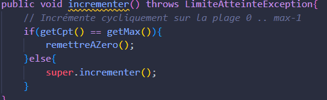
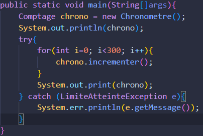

En Java, les tableaux peuvent être de taille fixe (statique). Une fois créés, on ne peut pas changer leur taille. Leur manipulation est similaire au langage C. Exemples:
int[] tab = new init[5];int[] tab2 = {0,1,2,3,4};
On a la longeur du tableau avec tab.length.
Les Collections (java.util)
Les collections ont une taille dynamique. Les collections sont des ensembles qui stockent que des objets (c'est-à-dire que des références).
L'interface List (ArrayList)
La classe ArrayList est la plus utilisée et fonctionne comme un tableau dynamique. Exemple : ArrayList al;
al = new ArrayList(...) : Initialise la collection.
al.add(E element) : Ajoute un élément.
al.get(int i) : Récupère un élément.
al.size() : Renvoie la taille de la collection.
L'interface Map (Dictionnaire HashMap)
La classe HashMap est un ensemble organisé sous la forme de clef/valeur. Exemple : HashMap hm;
Etudiant e1 = new Etudiant("001",...); hm.put(e1.getNumero(),e) : Ajoute un Objet.
hm.get(Objet clef) : récupère la valeur d'une clef.
Gestion des Erreurs
Une exception est un objet qui s'instancie lors de l'éxécution d'un code contenant une situation anormale détectée (erreur). Exemple concret :

Code : incrementer() de la classe CompteurCyclique lance la classe Exception Personalisé LimiteAtteintException hérite de Exception

Code : dans le main dans le try on met le code dangereux et catch si erreur
Architecture MVC et Java Swing
Pour implémenter une interface graphique (GUI), on se base sur le modèle MVC qui sépare les données de leur affichage. Les éléments graphiques développés à l'aide de la bibliothèque de classes Swing.